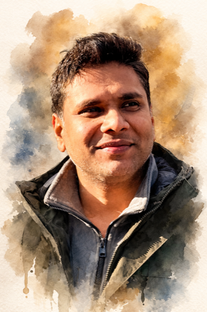

Safety AI Technical Leader
I build safety systems for AI and the people it affects. At PlayStation I founded and lead the Trust & Safety ML team, building content moderation, child protection, and proactive intervention systems serving hundreds of millions of users. That work taught me what production safety requires: multi-stage oversight pipelines, policy-grounded evaluation, and measurement frameworks that hold up under distributional shift. Now I'm building and studying practical guardrails: eval validity, red teaming methodology, and interventions that measurably reduce harm in production.

Stanford / UC Berkeley
AI Safety Camp
PlayStation (Sony Interactive Entertainment)
IBM
IBM
Won the OpenAI Safety Hackathon ($5k prize). Built an open-sourced system for detecting self-harm content, combining multimodal analysis to identify at-risk users and enable timely intervention. Code →
SPAR research project investigating how human expertise and AI capabilities can be optimally combined for identifying harmful content, building on DeepMind's foundational work in human-AI collaboration. Project page →
AI Safety Camp research project focused on making safety evaluation and red teaming tools more accessible to a broader community of researchers, developers, and organizations. Project page →
US11194905B2. Network-accessible cyber-threat security analytics service for characterizing and prioritizing threat indicators using federated search across enterprise-connected knowledge bases.
Conversational AI assistant for gameplay: natural language queries, contextual alerts, and multimodal responses (voice, text, haptics).
Master of Data Science
2017
Master of Computer Science
2015
Bachelor of Computer Science
2009